Sarea City
Designing a smart street lighting management platform with optimized usability, easy maintenance, and adaptability to various use cases from 0 to 1
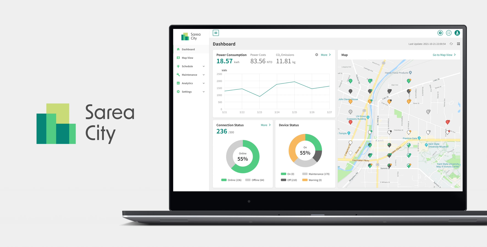
Product Design
Design System
2 Backend Developer
1 Project Manager
1 Product Owner
Optimizing street light management in smart cities
The Smart Street Light Management System
Sarea City is a smart street light management system that allows users to control street lights remotely, monitor the device status of each streetlight, and set lighting schedules. It is one of the main products of Spark Technologies, a company that provides customized IoT services for businesses and organizations.
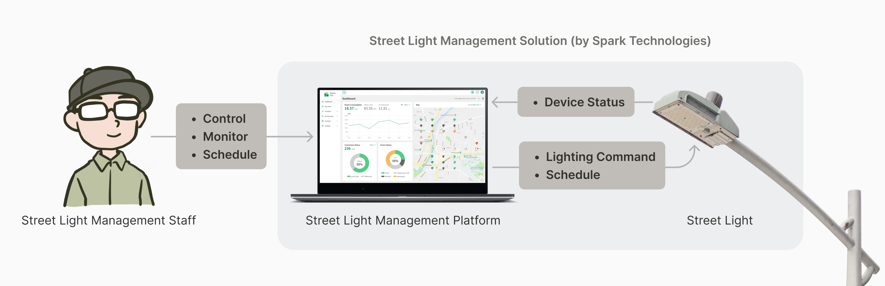
Street Light Management Staff
Our users were street light management staff in the city government or large institutions like universities. They need to set up and maintain street lights in specific areas to ensure people's safety.
The existing street light management solutions were hard to market as products due to unintuitive and inconsistent UX patterns
The smart street light management system was developed during the company's early stages, and due to time and resource constraints, there was room for improvement in the UX of the digital platform.
Additionally, since the previous platforms were one-off solutions built for different clients, the UX patterns across them were not consistent, making it hard to market the solution as a product for potential clients.
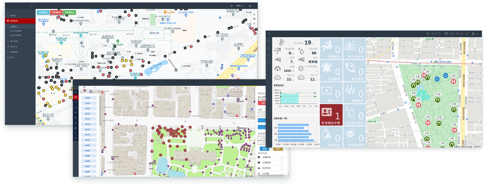
Past street light management platformsSarea City: a digital platform optimized for intuitive IoT device management in smart cities
Sarea City is a modular street lighting management platform that integrates with the hardware system to offer users an intuitive device management experience. The three main design challenges were clear device status display, intuitive IoT interactions, and a scalable design system for future customization. In this project, I optimized the overall user experience, designed the entire platform from 0 to 1, and established a consistent design system for the platform to simplify maintenance tasks for the R&D team.
How might we display IoT device statuses clearly and informatively?
Real-Time Monitoring with Interactive Map Pins
Users need to monitor real-time device status and check the detailed information of each street light on the platform. In Sarea City, each map pin represent the location of a street light. When users click on a map pin, the information module would slide in to display the detail of the street light and the equipped devices.
The Existing Methods of Displaying Information Need Optimization
The Old Map Pins are Hard to Identify
In the existing platform, we used different colors on rings and circles to define the different statuses of each smart pole. However, as the number of installed IoT devices increased, the combination of colors on the map pins became too complicated and hard to identify.
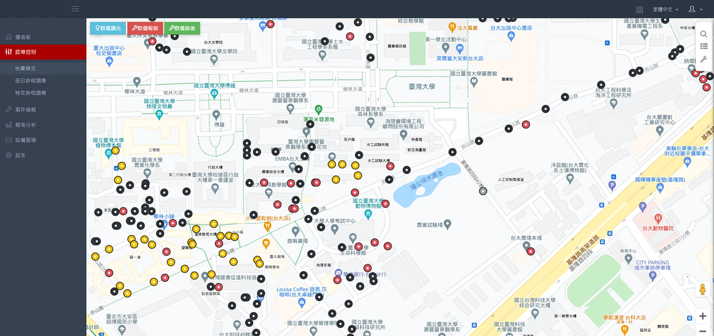
The Old Info Modules are Space-Consuming
When users are editing street light or device data, the information module pops up and covers the map, hindering users' ability to reference spatial context while making changes.
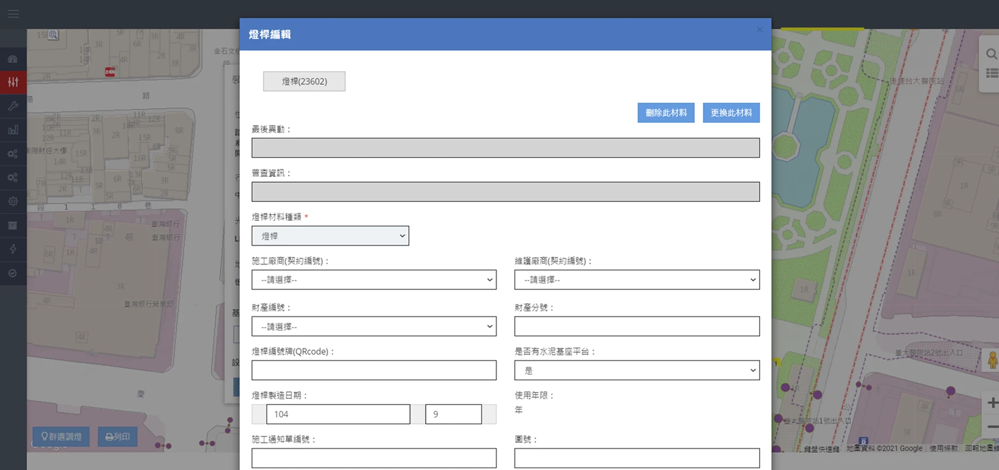
New Map Pins and Information Module Design that Provides Clearer Information
Redesigning Map Pins for Enhanced Information Hierarchy
I prioritized the luminaire controller statuses because of their operational importance for the street light management staff. For secondary IoT devices, such as electrical switch box controllers, I used a small dot positioned in the top-right corner of each map pin.
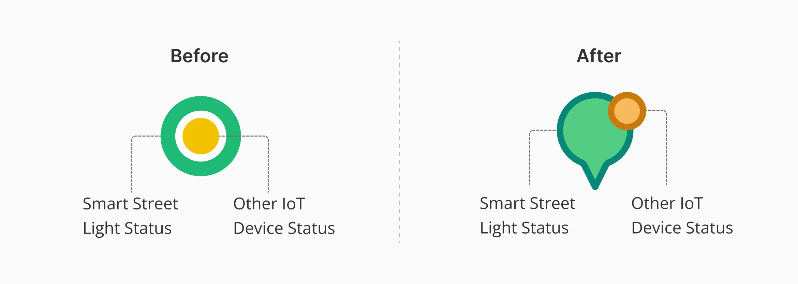
Map pin design comparison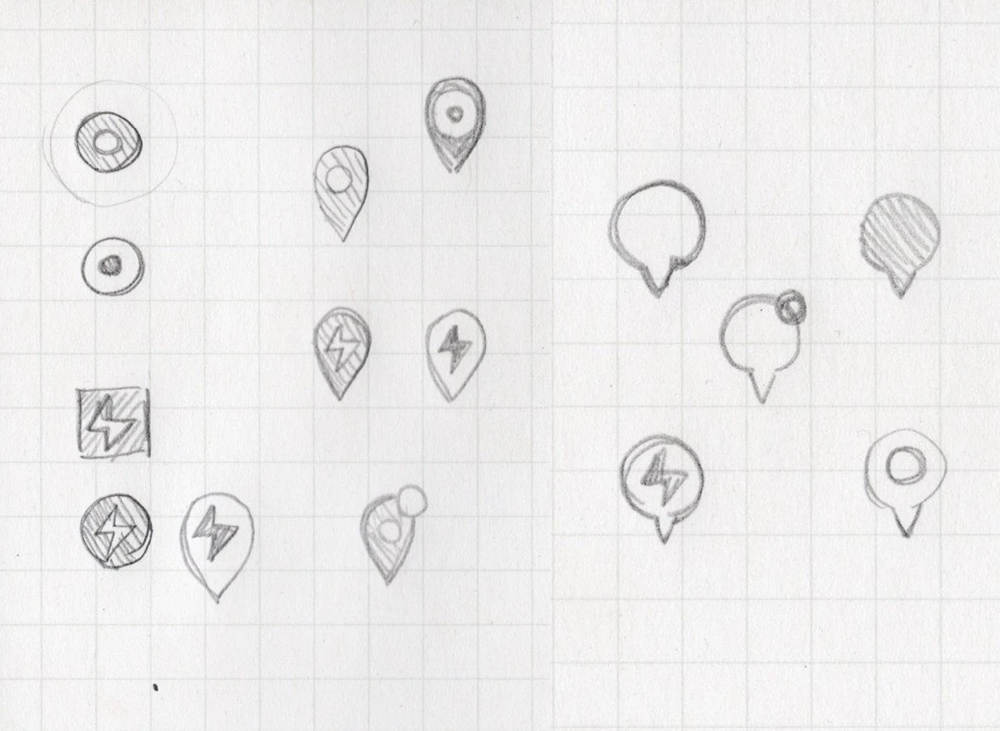
Map pin design ideation sketchesProviding Real-time Feedback of Device Status to Reduce Unnecessary Actions
There's a brief delay between users controlling the lights through the platform and the luminaire controller receiving the signal to adjust the light. This delay might lead users to believe they haven't successfully controlled the lights, prompting unnecessary repeated commands.
To resolve this issue, we introduced a "switching" status that appears during the time gap after users control the lights through the platform. To convey this status more clearly, I combined the colors representing "on" and "off" to indicate the "switching" status better.
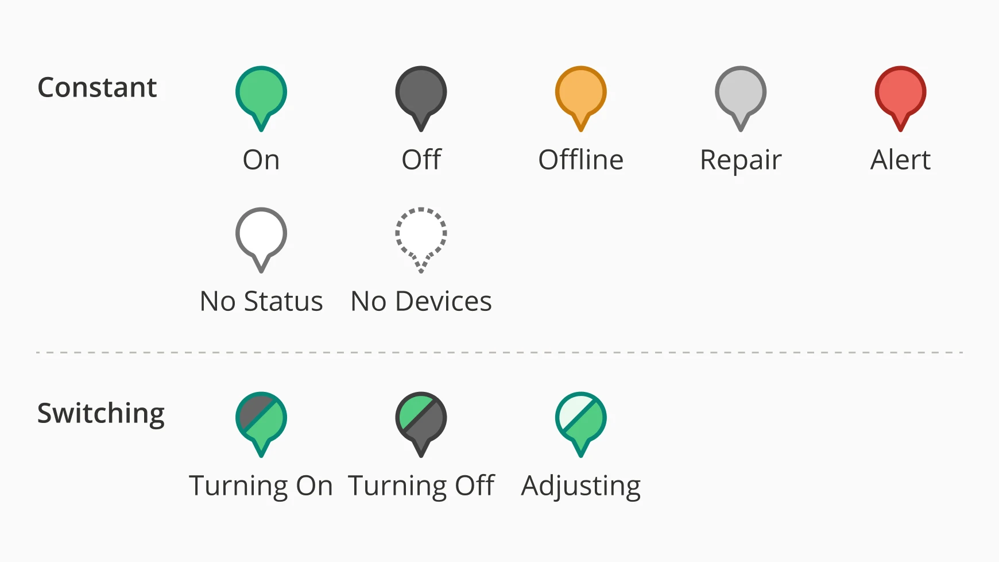
Different street light statusesOptimizing Layout to Provide Flexibility in Information Display
The new information module is fixed on one side of the map so that users can edit the pole's information and check the map pins simultaneously. This design provides more flexibility of displaying more location-related information on the map.
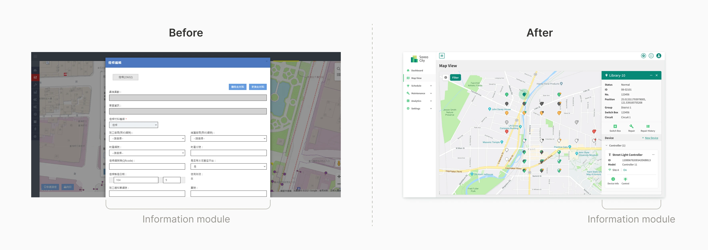
How might we interact with the IoT system (ex. schedule setting) intuitively?
Setting Multiple Lighting Schedules for Various Scenarios
To provide greater flexibility in lighting management, we enabled users to set multiple lighting schedules for each streetlight based on different needs. For example, users can set a regular lighting schedule that operates daily. Also, they can create "special schedules" for specific events, like, streetlights in shopping areas might stay brighter later into the night on New Year's Eve to accommodate celebrators.
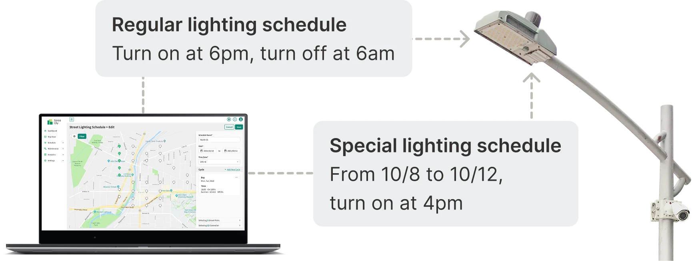
The Misalignment of User Interface and Hardware Operation Logic Led to Confusion in Schedule Setting
In the existing platform, the lighting schedule was displayed as a box, enhancing the user's mental model of "scheduling" as setting a time slot. This differs from how the luminaire controllers actually operate. Since we aimed to apply multiple special scheduling to luminaire controllers to increase flexibility in lighting control, the existing display (box model) might cause confusion for users.
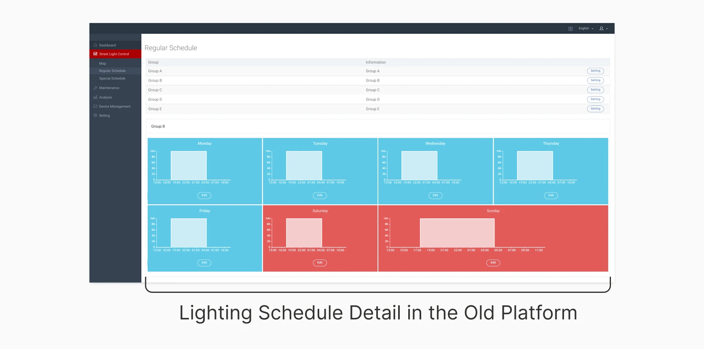
Aligning User Interface with Hardware Logic for Clear and Accurate Scheduling
Setting "Timings" instead of "Time Slots"
To resolve this, we shifted from a time slot approach to a timing-based system, where users set specific times for lights to turn on or off. This way, users can clearly understand how the street light will behave.
Displaying Scheduling Details in Timing Lists instead of Time Slots
When users check the details of every schedule applied to each street light for troubleshooting, they would see a list of timings instead of time slots. This allowed users' mental model to align with hardware logic seamlessly, providing clarity and reducing scheduling errors.
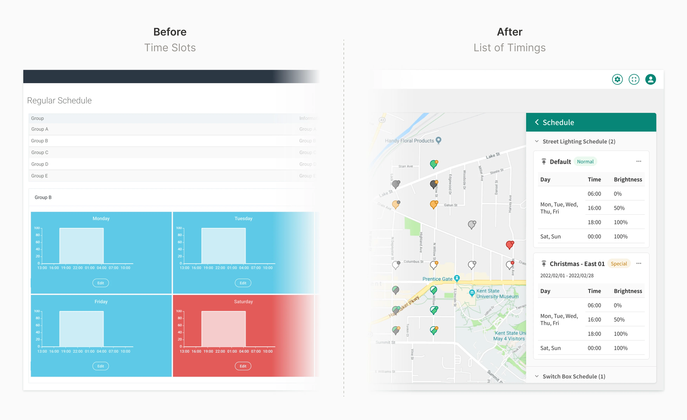
How might we build a design system that ensures consistency and scalability across current and future IoT solutions?
Simplicity for Future Adaptations
Sarea City was the first product of Sarea, the product series that contained Spark Technologies' IoT management platforms for different vertical domains.
Anticipating the need for a consistent design system across future products, I built the new design system with a flat and simple design style. This not only matched the logos but also ensured flexibility for upcoming adaptations, streamlining maintenance for the R&D team and providing clear instructions for future updates.

Consistent Design System that Applies to Various Purposes
Simplifying the Color Scheme to Reduce the Effort to Keep Consistency across Products
I used grass green as the primary color to match the logo. For the secondary color, I chose light yellowish orange, which not only created a visual hierarchy through varying color brightness but also provided sufficient contrast with the primary colors of most other products in Sarea product series. This strategic selection simplifies the application of the design system to other IoT platforms, reducing the effort required to keep consistency across products.

Dark Mode
While dark mode wasn't a primary focus for this project, we ensured the design aligns with the overall product series' standards by creating a dark mode color palette that directly references the default palette. Adjustments were made to saturation and color contrast to optimize readability and maintain clear differentiation between elements.

UI Components in Different States
In Sarea City and future IoT products, UI components come in various states, from basic elements like buttons and input fields to specialized ones like map pins. To help frontend developers understand and use these components in different scenarios more efficiently, I created an exhaustive list of all their possible states and statuses.

Improved usability and future design efficiency
Enhancing usability by bridging user behavior and hardware operation
We anticipated that by providing real-time feedback and aligning user expectations with hardware operations would increase users' confidence in the system and enhance the overall usability.
Increasing efficiency in design & development in future IoT solutions with design system
The UX design patterns and design system I created for this project were extensively applied across multiple custom IoT service projects. The design system and Figma component library significantly streamlined the design and frontend development processes in the following projects, enhancing overall product development efficiency.